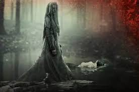
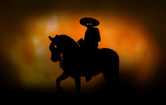
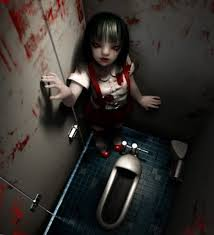

También existen leyendas que es una narración sobre hechos sobrenaturales y naturales o una mezcla de ambos que se transmite de generación en generación, de forma oral o escrita. Tienen diferentes géneros pero las que destacan mas son las de terror.

La historia de la llorona es una leyenda urbana que es muy popular en todos los países de Latinoamérica. Se trata de una mujer que pierde a sus hijos y se convierte en alma en pena que vaga por el mundo buscando en vano a sus hijos, perturbando con su llanto a los que la oyen. En cada país tienen una versión o adaptación de la historia, pero la trama es siempre similar.
La leyenda tiene un origen en la cultura precolombina antes de la llegada de los españoles. Estas tenían ya seres mitológicos o personajes que lloraban por el mundo por diferente
s motivos.
Cuenta la leyenda que en un lejano pueblo vivia una mujer junto con sus tres hijitos. Todo iba muy bien en la familia, los niños eran muy felices y su madre. los quería muchísimo. Pero una noche Iluviosa de invierno ocurrió algo terrible.
Aquella noche, llegó a casa el padre, quien los habia abandonado tiempo atrás. Sin él la familia había sido más feliz y esa noche sus gritos y borracheras se volverían a notar en la casa por no hablar de las brutales palizas que tanto los niños como la madre sufririan. La mujer siempre habia rezado para que no regresara nunca más, pero el destino quiso otra cosa
El hombre era un monstruo y tiró de un puñetazo la puerta y entró gritando que todos fueran a recibirlo, los niños, espantados, se escondieron y la madre, por amor a sus hijos, se enfrentó cara a cara con su marido. La mujer sufrió un golpe que la dejó sin sentido durante varias horas. Cuando la madre despertó, buscó a sus hijos por todos los rincones de la casa. Pero ni los niños ni su marido se hallaban por ninguna parte, desesperada corrió bajo la tormenta llorando y gritando sus nombres, pasaron dias, meses, años, muchos años buscando...
Hasta que finalmente una noche murió de tristeza, nadie supo nada de los niños, nadie los vio nunca más, no aparecieron sus cuerpos o alguna señal del hombre que se los llevó.
Desde entonces se dice que su espíritu no descansa en paz y todas las noches se le oye llorar y lamentar con tristeza por los alrededores. Las mujeres corren tras sus hijos para esconderlos, ya que cuentan que se los puede llevar la Ilorona, para volver a ser feliz.

Cuando el sol comienza a esconderse y las gallinas trepan los árboles para dormirse, las madres meten a sus hijos, las puertas de las casas son atrancadas y los viajeros apresuran el paso mientras rezan. Nadie quiere encontrarse con el Charro Negro.
Se trata de un ente que recibe el nombre por su vestimenta. Siempre que se aparece, porta un elegante ajuar de charro color negro con detalles de oro o plata.
Se le puede ver montado sobre su caballo: un gran animal cuyos ojos son dos bolas de fuego que parecen hurgar en el alma de la victima.
Adela era una joven despreocupada para su época, mientras las mujeres permanecían en casa atendiendo a los hombres de su familia, ella. prefería la vida sin compromisos, vagaba ya entrada la noche en quien sabe dónde, a pesar de la preocupación de sus padres.
Una de tantas noches, se encontró en su camino con un hombre alto, de aspecto elegante, de impecable traje negro compuesto por una chaqueta corta, una camisa, un pantalón ajustado y un sombrero de ala ancha.
Circulaba a lomo de un caballo enorme y de color azabache. Que impresionó a la joven al instante por su gran porte, mirada elocuente y palabras cálidas.
Tras una amable conversación Adela aceptó aligerar el viaje y consintió a montar el caballo.
En el justo instante que ella estuvo en el lomo del animal, este creció el doble de su tamaño, ardiendo en llamas, le impidió el escape, al escuchar los gritos de espanto de la joven, algunos salieron en su auxilio, solo para darse cuenta de que ella era ya propiedad del Diablo, que en forma de charro negro cabalgaba todas las noches por los alrededores de la Ciudad de México en busca de un alma incauta que llevar a sus dominios.
Por ella no pudo hacerse nada, solo la vieron arder en llamas sobre el caballo, ahogándose en sus propios gritos de dolor y desesperación.
Nada malo puede decirse del Charro Negro si el viajero se limita a permitir su compañía hacia su lugar de residencia; si se acerca el amanecer, se despedirá cortésmente y se marchará lentamente, al igual que si el sendero que recorre lleva a las cercanías de una iglesia.
Y así la leyenda del Charro Negro fue una de las leyendas más temidas en la época de los abuelos.

Es el tenebroso espíritu de una joven que se aparece en los baños de las escuelas. Ganado tiene el pelo negro corto y lacio, viste un uniforme escolar con falda roja y tirantes sobre una camisa blanca. Ella es un espíritu de una niña que murió en un bombardeo en su escuela en la segunda guerra mundial, por eso usa esa vestimenta, sigue rondando en este plano como en el de los muestos sin saber que ha muerto. Según cuentan su oscura mi cara es capaz de elarle la sangre al más valiente se dice que Hanako-san es un ritual de iniciación o una prueba de valentía en las escuelas muy parecida a bloody Mary.
Habita en el tercer piso si notas su presencia demoníaca y eres lo suficientemente valiente como para llamar a la puerta tienes que hacerlo tres veces y preguntar: Hanako-san, Hanako-san, Hanako-san estás ahí? ;entonces una tenebrosa voz te responderá sí: ¡estoy aquí! entonces ella puede desvanecerse sin más sumergiéndose en el retrete y tirando de la cisterna o bien con una mano ensangrentada te arrastrará para matarte.